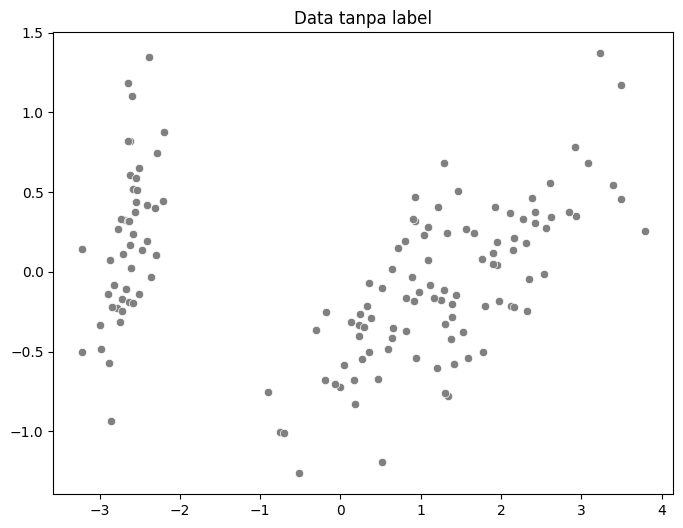
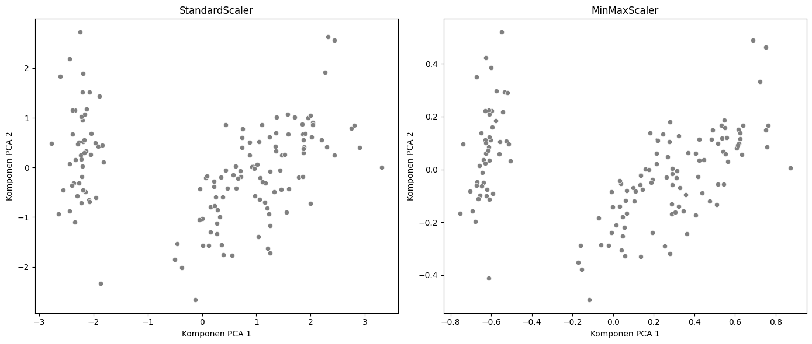
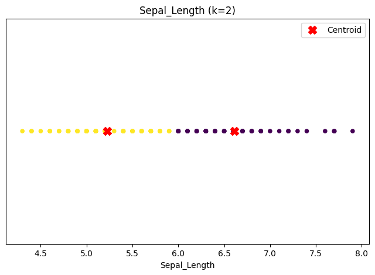
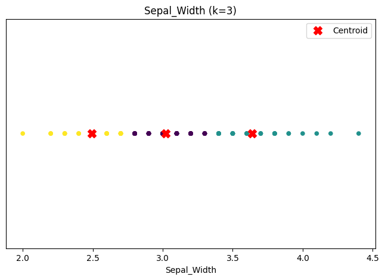
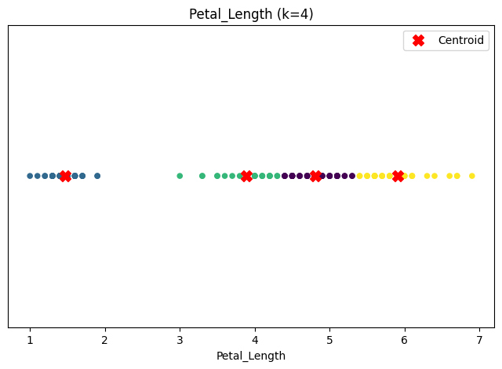
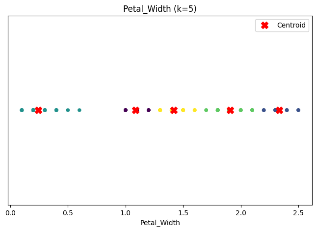

Diskritisasi#
Diskritisasi adalah proses mengubah data kontinu (numerik) menjadi data diskrit (kategorikal). Bayangkan Anda memiliki data usia yang sangat bervariasi (misalnya, 21.5 tahun, 47.8 tahun), lalu Anda menyederhanakannya menjadi beberapa kategori seperti “Muda”, “Paruh Baya”, dan “Tua”.
Tujuan utama diskritisasi:
Menyederhanakan Model: Beberapa algoritma machine learning bekerja lebih baik atau bahkan hanya bisa memproses data kategorikal (contoh: Naive Bayes).
Mengurangi Noise: Fluktuasi kecil pada data numerik yang tidak signifikan dapat diabaikan dengan mengelompokkannya ke dalam satu kategori yang sama.
Mempermudah Interpretasi: Jauh lebih mudah memahami pengaruh kategori “Tua” terhadap suatu hasil daripada pengaruh usia “67.3 tahun”.
Cara Kerja#
Secara umum, proses diskritisasi bekerja dengan membagi rentang nilai data kontinu menjadi beberapa interval atau “bin”. Setiap data poin kemudian dimasukkan ke dalam bin yang sesuai.
Dua metode yang paling umum adalah:
Equal Width Binning (Interval Sama): Metode ini membagi rentang data (dari nilai minimum hingga maksimum) menjadi N interval yang lebarnya sama. Ini adalah metode yang paling intuitif.
Equal Frequency Binning (Frekuensi Sama): Metode ini membagi data sehingga setiap bin memiliki jumlah data poin yang (kurang lebih) sama.
Langkah-Langkah#
- Diskritisasi (Equal Width)#
Tentukan Jumlah Bin (K): Pilih berapa banyak kategori yang Anda inginkan. Ini adalah keputusan yang paling penting dan seringkali bergantung pada konteks masalah.
Urutkan Data: Urutkan semua data dari nilai terkecil hingga terbesar untuk mempermudah identifikasi nilai minimum dan maksimum.
Cari Nilai Minimum & Maksimum: Temukan nilai terkecil (min) dan terbesar (max) dari dataset Anda.
Hitung Lebar Bin: Hitung lebar setiap interval menggunakan rumus: $\( \text{Lebar Bin} = \frac{\text{Nilai Maksimum} - \text{Nilai Minimum}}{\text{Jumlah Bin (K)}} \)$
Tentukan Batas Bin: Tentukan rentang nilai untuk setiap bin berdasarkan lebar yang sudah dihitung.
Petakan Data: Masukkan setiap data poin ke dalam bin yang sesuai.
- Diskritisasi (Equal Frequency)#
Tentukan Jumlah Bin (K): Sama seperti sebelumnya, Anda memilih jumlah kategori yang diinginkan.
Urutkan Data: Langkah ini wajib dan sangat krusial untuk metode ini.
Hitung Jumlah Data per Bin: Hitung berapa banyak data poin yang seharusnya ada di setiap bin dengan rumus: $\( \text{Frekuensi per Bin} = \frac{\text{Jumlah Total Data}}{\text{Jumlah Bin (K)}} \)$
Tentukan Batas Bin (Split Points): Berdasarkan data yang sudah diurutkan, tentukan titik potong (batas) yang membagi data sesuai jumlah frekuensi per bin.
Petakan Data: Masukkan setiap data poin ke dalam kategori yang sesuai berdasarkan batas yang baru.
Contoh Perhitungan Manual#
- Diskritisasi (Equal Width)#
Dataset Awal (Usia):
[22, 25, 15, 38, 45, 61, 55, 42, 65, 72, 31]
Langkah 1: Tentukan Jumlah Bin (K)#
Kita ingin membagi data usia menjadi 3 kategori.
K = 3
Kita akan menamainya:
Muda,Paruh Baya,Tua.
Langkah 2: Urutkan Data#
[15, 22, 25, 31, 38, 42, 45, 55, 61, 65, 72]
Langkah 3: Cari Nilai Minimum & Maksimum#
Nilai Minimum = 15
Nilai Maksimum = 72
Langkah 4: Hitung Lebar Bin#
Menggunakan rumus yang sudah kita bahas: $\( \text{Lebar Bin} = \frac{72 - 15}{3} = \frac{57}{3} = 19 \)$ Jadi, setiap kategori akan memiliki rentang nilai sebesar 19.
Langkah 5: Tentukan Batas Bin#
tentukan batas untuk setiap bin:
Bin 1 (Muda): Mulai dari nilai minimum hingga (minimum + lebar).
15sampai15 + 19=34. Rentang: [15 - 34]Bin 2 (Paruh Baya): Mulai dari batas atas Bin 1 hingga (batas atas Bin 1 + lebar).
34sampai34 + 19=53. Rentang: (34 - 53]Bin 3 (Tua): Mulai dari batas atas Bin 2 hingga nilai maksimum.
53sampai53 + 19=72. Rentang: (53 - 72]
Catatan: Aturan umumnya adalah nilai batas atas masuk ke bin berikutnya. Namun, untuk kesederhanaan, kita bisa definisikan: Bin 1 mencakup 34, Bin 2 mencakup 53, dst. Untuk konsistensi, kita akan gunakan aturan: [batas bawah, batas atas). Artinya, nilai yang sama dengan batas atas masuk ke bin berikutnya. Nilai maksimum (72) akan masuk di bin terakhir.
**Langkah 6: Petakan Data **#
Usia Asli |
Bin (Rentang) |
Kategor Baru |
|---|---|---|
15 |
[15 - 34) |
Muda |
22 |
[15 - 34) |
Muda |
25 |
[15 - 34) |
Muda |
31 |
[15 - 34) |
Muda |
38 |
[34 - 53) |
Paruh Baya |
42 |
[34 - 53) |
Paruh Baya |
45 |
[34 - 53) |
Paruh Baya |
55 |
[53 - 72] |
Tua |
61 |
[53 - 72] |
Tua |
65 |
[53 - 72] |
Tua |
72 |
[53 - 72] |
Tua |
Hasil Akhir:
Data kontinu [22, 25, 15, ...] telah berhasil diubah menjadi data kategorikal ['Muda', 'Muda', 'Muda', ...].
- Diskritisasi (Equal Frequency)#
Dataset Awal (Usia):
[22, 25, 15, 38, 45, 61, 55, 42, 65, 72, 31]
Jumlah Total Data = 11
Langkah 1: Tentukan Jumlah Bin (K)#
Kita tetap menggunakan 3 kategori agar konsisten.
K = 3
Kita akan menamainya:
Kelompok 1,Kelompok 2,Kelompok 3.
Langkah 2: Urutkan Data#
[15, 22, 25, 31, 38, 42, 45, 55, 61, 65, 72]
Langkah 3: Hitung Jumlah Data per Bin#
Karena hasilnya bukan bilangan bulat, kita tidak bisa membaginya secara sempurna. Kita harus membulatkannya. Artinya, beberapa bin akan memiliki 4 data dan beberapa akan memiliki 3 data. Kita bisa membaginya menjadi: Bin 1 (4 data), Bin 2 (4 data), dan Bin 3 (3 data). Total 4+4+3 = 11 data.
Langkah 4: Tentukan Batas Bin#
Kita akan memotong daftar data yang sudah diurutkan berdasarkan frekuensi tersebut.
[15, 22, 25, 31, | 38, 42, 45, 55, | 61, 65, 72]
<—- Bin 1 —-> <—- Bin 2 —-> <– Bin 3 –>
Batas Bin 1 & 2: Titik potongnya ada di antara 31 dan 38. Batasnya bisa kita ambil nilai tengahnya:
(31 + 38) / 2 = 34.5.Batas Bin 2 & 3: Titik potongnya ada di antara 55 dan 61. Batasnya:
(55 + 61) / 2 = 58.
Jadi, batas-batas bin kita adalah:
Kelompok 1: Nilai di bawah 34.5
Kelompok 2: Nilai dari 34.5 hingga di bawah 58
Kelompok 3: Nilai dari 58 ke atas
**Langkah 5: Petakan Data **#
Sekarang, kita petakan setiap data poin dari dataset awal ke kelompok yang sesuai.
Usia Asli |
Kategori Baru (Equal Frequency) |
Kategori Lama (Equal Width) |
|---|---|---|
15 |
Kelompok 1 (< 34.5) |
Muda |
22 |
Kelompok 1 (< 34.5) |
Muda |
25 |
Kelompok 1 (< 34.5) |
Muda |
31 |
Kelompok 1 (< 34.5) |
Muda |
38 |
Kelompok 2 (34.5 - 58) |
Paruh Baya |
42 |
Kelompok 2 (34.5 - 58) |
Paruh Baya |
45 |
Kelompok 2 (34.5 - 58) |
Paruh Baya |
55 |
Kelompok 2 (34.5 - 58) |
Tua |
61 |
Kelompok 3 (>= 58) |
Tua |
65 |
Kelompok 3 (>= 58) |
Tua |
72 |
Kelompok 3 (>= 58) |
Tua |
Perhatikan Perbedaannya! Dengan metode Equal Frequency, usia 55 sekarang masuk ke Kelompok 2, bukan lagi ke kategori ‘Tua’ seperti pada metode Equal Width. Ini terjadi karena metode ini memprioritaskan keseimbangan jumlah anggota di setiap kelompok.
Perbandingan: Equal Width vs. Equal Frequency#
Fitur |
Equal Width (Lebar Sama) |
Equal Frequency (Frekuensi Sama) |
|---|---|---|
Prinsip Utama |
Rentang nilai setiap bin sama. |
Jumlah data di setiap bin sama. |
Kelebihan |
Sederhana, mudah dihitung dan diinterpretasikan. |
Tahan terhadap pencilan (outliers) dan data miring (skewed). |
Kekurangan |
Sensitif terhadap pencilan, bisa menghasilkan bin yang kosong atau sangat sedikit isinya. |
Bisa memisahkan nilai yang berdekatan ke bin yang berbeda, atau menggabungkan nilai yang jauh ke bin yang sama. Batas bin-nya kurang intuitif. |
Kapan Digunakan |
Ketika data terdistribusi cukup merata (misalnya, distribusi normal). |
Ketika data terdistribusi miring, banyak pencilan, atau ingin setiap kategori punya pengaruh yang seimbang. |
Implementasi Diskritisasi pada dataset iris#
1. Persiapan data#
Dataset Iris memiliki 150 sampel bunga Iris dari tiga spesies: Setosa, Versicolor, dan Virginica, dengan empat fitur kontinu: panjang dan lebar sepal, serta panjang dan lebar petal. Dalam kasus ini, kita akan menggunakan data Iris tanpa label target (spesies) untuk menguji algoritma K-Means (unsupervised learning).
1.1 Install Dependency python yang dibutuhkan:
!pip install pymysql
!pip install pandas
!pip install psycopg2-binary
!pip install sqlalchemy
!pip install python-dotenv
Requirement already satisfied: pymysql in /usr/local/python/3.12.1/lib/python3.12/site-packages (1.1.1)
[notice] A new release of pip is available: 24.3.1 -> 25.1.1
[notice] To update, run: python3 -m pip install --upgrade pip
Requirement already satisfied: pandas in /home/codespace/.local/lib/python3.12/site-packages (2.2.3)
Requirement already satisfied: numpy>=1.26.0 in /home/codespace/.local/lib/python3.12/site-packages (from pandas) (2.2.0)
Requirement already satisfied: python-dateutil>=2.8.2 in /home/codespace/.local/lib/python3.12/site-packages (from pandas) (2.9.0.post0)
Requirement already satisfied: pytz>=2020.1 in /home/codespace/.local/lib/python3.12/site-packages (from pandas) (2024.2)
Requirement already satisfied: tzdata>=2022.7 in /home/codespace/.local/lib/python3.12/site-packages (from pandas) (2024.2)
Requirement already satisfied: six>=1.5 in /home/codespace/.local/lib/python3.12/site-packages (from python-dateutil>=2.8.2->pandas) (1.17.0)
[notice] A new release of pip is available: 24.3.1 -> 25.1.1
[notice] To update, run: python3 -m pip install --upgrade pip
Requirement already satisfied: psycopg2-binary in /usr/local/python/3.12.1/lib/python3.12/site-packages (2.9.10)
[notice] A new release of pip is available: 24.3.1 -> 25.1.1
[notice] To update, run: python3 -m pip install --upgrade pip
Requirement already satisfied: sqlalchemy in /usr/local/python/3.12.1/lib/python3.12/site-packages (2.0.38)
Requirement already satisfied: greenlet!=0.4.17 in /usr/local/python/3.12.1/lib/python3.12/site-packages (from sqlalchemy) (3.1.1)
Requirement already satisfied: typing-extensions>=4.6.0 in /home/codespace/.local/lib/python3.12/site-packages (from sqlalchemy) (4.12.2)
[notice] A new release of pip is available: 24.3.1 -> 25.1.1
[notice] To update, run: python3 -m pip install --upgrade pip
Requirement already satisfied: python-dotenv in /usr/local/python/3.12.1/lib/python3.12/site-packages (1.0.1)
[notice] A new release of pip is available: 24.3.1 -> 25.1.1
[notice] To update, run: python3 -m pip install --upgrade pip
1.2 Buat koneksi ke database aiven
Upload Env
Format:
# Database MySQL
MYSQL_HOST=<HOSTNAME>
MYSQL_USER=<USERNAME>
MYSQL_PASSWORD=<PASSWORD>
MYSQL_PORT=<PORT>
MYSQL_DATABASE=<DATABASE_NAME>
from google.colab import files
uploaded = files.upload()
---------------------------------------------------------------------------
ModuleNotFoundError Traceback (most recent call last)
Cell In[2], line 1
----> 1 from google.colab import files
2 uploaded = files.upload()
ModuleNotFoundError: No module named 'google'
Koneksikan
import pandas as pd
from sqlalchemy import create_engine
import os
from dotenv import load_dotenv
load_dotenv()
# Ambil variabel koneksi dari lingkungan
MYSQL_HOST = os.getenv("MYSQL_HOST")
MYSQL_PORT = os.getenv("MYSQL_PORT")
MYSQL_USER = os.getenv("MYSQL_USER")
MYSQL_PASSWORD = os.getenv("MYSQL_PASSWORD")
MYSQL_DATABASE = os.getenv("MYSQL_DATABASE")
# Gunakan SQLAlchemy untuk koneksi ke MySQL
mysql_engine = create_engine(f"mysql+pymysql://{MYSQL_USER}:{MYSQL_PASSWORD}@{MYSQL_HOST}:{MYSQL_PORT}/{MYSQL_DATABASE}")
Ambil dan tampilkan data
try:
# Query MySQL
mysql_query = "SELECT * FROM iris_data;"
df_mysql = pd.read_sql(mysql_query, mysql_engine)
# Print hasil query
print("Data dari MySQL:")
print(df_mysql.to_string())
# Jika data berhasil diambil, hapus file .env
if os.path.exists(".env"):
os.remove(".env")
except Exception as e:
print(f"Gagal mengambil data: {e}")
Data dari MySQL:
Id Sepal_Length Sepal_Width Petal_Length Petal_Width Class
0 1 5.1 3.5 1.4 0.2 Iris-setosa
1 2 4.9 3.0 1.4 0.2 Iris-setosa
2 3 4.7 3.2 1.3 0.2 Iris-setosa
3 4 4.6 3.1 1.5 0.2 Iris-setosa
4 5 5.0 3.6 1.4 0.2 Iris-setosa
5 6 5.4 3.9 1.7 0.4 Iris-setosa
6 7 4.6 3.4 1.4 0.3 Iris-setosa
7 8 5.0 3.4 1.5 0.2 Iris-setosa
8 9 4.4 2.9 1.4 0.2 Iris-setosa
9 10 4.9 3.1 1.5 0.1 Iris-setosa
10 11 5.4 3.7 1.5 0.2 Iris-setosa
11 12 4.8 3.4 1.6 0.2 Iris-setosa
12 13 4.8 3.0 1.4 0.1 Iris-setosa
13 14 4.3 3.0 1.1 0.1 Iris-setosa
14 15 5.8 4.0 1.2 0.2 Iris-setosa
15 16 5.7 4.4 1.5 0.4 Iris-setosa
16 17 5.4 3.9 1.3 0.4 Iris-setosa
17 18 5.1 3.5 1.4 0.3 Iris-setosa
18 19 5.7 3.8 1.7 0.3 Iris-setosa
19 20 5.1 3.8 1.5 0.3 Iris-setosa
20 21 5.4 3.4 1.7 0.2 Iris-setosa
21 22 5.1 3.7 1.5 0.4 Iris-setosa
22 23 4.6 3.6 1.0 0.2 Iris-setosa
23 24 5.1 3.3 1.7 0.5 Iris-setosa
24 25 4.8 3.4 1.9 0.2 Iris-setosa
25 26 5.0 3.0 1.6 0.2 Iris-setosa
26 27 5.0 3.4 1.6 0.4 Iris-setosa
27 28 5.2 3.5 1.5 0.2 Iris-setosa
28 29 5.2 3.4 1.4 0.2 Iris-setosa
29 30 4.7 3.2 1.6 0.2 Iris-setosa
30 31 4.8 3.1 1.6 0.2 Iris-setosa
31 32 5.4 3.4 1.5 0.4 Iris-setosa
32 33 5.2 4.1 1.5 0.1 Iris-setosa
33 34 5.5 4.2 1.4 0.2 Iris-setosa
34 35 4.9 3.1 1.5 0.1 Iris-setosa
35 36 5.0 3.2 1.2 0.2 Iris-setosa
36 37 5.5 3.5 1.3 0.2 Iris-setosa
37 38 4.9 3.1 1.5 0.1 Iris-setosa
38 39 4.4 3.0 1.3 0.2 Iris-setosa
39 40 5.1 3.4 1.5 0.2 Iris-setosa
40 41 5.0 3.5 1.3 0.3 Iris-setosa
41 42 4.5 2.3 1.3 0.3 Iris-setosa
42 43 4.4 3.2 1.3 0.2 Iris-setosa
43 44 5.0 3.5 1.6 0.6 Iris-setosa
44 45 5.1 3.8 1.9 0.4 Iris-setosa
45 46 4.8 3.0 1.4 0.3 Iris-setosa
46 47 5.1 3.8 1.6 0.2 Iris-setosa
47 48 4.6 3.2 1.4 0.2 Iris-setosa
48 49 5.3 3.7 1.5 0.2 Iris-setosa
49 50 5.0 3.3 1.4 0.2 Iris-setosa
50 51 7.0 3.2 4.7 1.4 Iris-versicolor
51 52 6.4 3.2 4.5 1.5 Iris-versicolor
52 53 6.9 3.1 4.9 1.5 Iris-versicolor
53 54 5.5 2.3 4.0 1.3 Iris-versicolor
54 55 6.5 2.8 4.6 1.5 Iris-versicolor
55 56 5.7 2.8 4.5 1.3 Iris-versicolor
56 57 6.3 3.3 4.7 1.6 Iris-versicolor
57 58 4.9 2.4 3.3 1.0 Iris-versicolor
58 59 6.6 2.9 4.6 1.3 Iris-versicolor
59 60 5.2 2.7 3.9 1.4 Iris-versicolor
60 61 5.0 2.0 3.5 1.0 Iris-versicolor
61 62 5.9 3.0 4.2 1.5 Iris-versicolor
62 63 6.0 2.2 4.0 1.0 Iris-versicolor
63 64 6.1 2.9 4.7 1.4 Iris-versicolor
64 65 5.6 2.9 3.6 1.3 Iris-versicolor
65 66 6.7 3.1 4.4 1.4 Iris-versicolor
66 67 5.6 3.0 4.5 1.5 Iris-versicolor
67 68 5.8 2.7 4.1 1.0 Iris-versicolor
68 69 6.2 2.2 4.5 1.5 Iris-versicolor
69 70 5.6 2.5 3.9 1.1 Iris-versicolor
70 71 5.9 3.2 4.8 1.8 Iris-versicolor
71 72 6.1 2.8 4.0 1.3 Iris-versicolor
72 73 6.3 2.5 4.9 1.5 Iris-versicolor
73 74 6.1 2.8 4.7 1.2 Iris-versicolor
74 75 6.4 2.9 4.3 1.3 Iris-versicolor
75 76 6.6 3.0 4.4 1.4 Iris-versicolor
76 77 6.8 2.8 4.8 1.4 Iris-versicolor
77 78 6.7 3.0 5.0 1.7 Iris-versicolor
78 79 6.0 2.9 4.5 1.5 Iris-versicolor
79 80 5.7 2.6 3.5 1.0 Iris-versicolor
80 81 5.5 2.4 3.8 1.1 Iris-versicolor
81 82 5.5 2.4 3.7 1.0 Iris-versicolor
82 83 5.8 2.7 3.9 1.2 Iris-versicolor
83 84 6.0 2.7 5.1 1.6 Iris-versicolor
84 85 5.4 3.0 4.5 1.5 Iris-versicolor
85 86 6.0 3.4 4.5 1.6 Iris-versicolor
86 87 6.7 3.1 4.7 1.5 Iris-versicolor
87 88 6.3 2.3 4.4 1.3 Iris-versicolor
88 89 5.6 3.0 4.1 1.3 Iris-versicolor
89 90 5.5 2.5 4.0 1.3 Iris-versicolor
90 91 5.5 2.6 4.4 1.2 Iris-versicolor
91 92 6.1 3.0 4.6 1.4 Iris-versicolor
92 93 5.8 2.6 4.0 1.2 Iris-versicolor
93 94 5.0 2.3 3.3 1.0 Iris-versicolor
94 95 5.6 2.7 4.2 1.3 Iris-versicolor
95 96 5.7 3.0 4.2 1.2 Iris-versicolor
96 97 5.7 2.9 4.2 1.3 Iris-versicolor
97 98 6.2 2.9 4.3 1.3 Iris-versicolor
98 99 5.1 2.5 3.0 1.1 Iris-versicolor
99 100 5.7 2.8 4.1 1.3 Iris-versicolor
100 101 6.3 3.3 6.0 2.5 Iris-virginica
101 102 5.8 2.7 5.1 1.9 Iris-virginica
102 103 7.1 3.0 5.9 2.1 Iris-virginica
103 104 6.3 2.9 5.6 1.8 Iris-virginica
104 105 6.5 3.0 5.8 2.2 Iris-virginica
105 106 7.6 3.0 6.6 2.1 Iris-virginica
106 107 4.9 2.5 4.5 1.7 Iris-virginica
107 108 7.3 2.9 6.3 1.8 Iris-virginica
108 109 6.7 2.5 5.8 1.8 Iris-virginica
109 110 7.2 3.6 6.1 2.5 Iris-virginica
110 111 6.5 3.2 5.1 2.0 Iris-virginica
111 112 6.4 2.7 5.3 1.9 Iris-virginica
112 113 6.8 3.0 5.5 2.1 Iris-virginica
113 114 5.7 2.5 5.0 2.0 Iris-virginica
114 115 5.8 2.8 5.1 2.4 Iris-virginica
115 116 6.4 3.2 5.3 2.3 Iris-virginica
116 117 6.5 3.0 5.5 1.8 Iris-virginica
117 118 7.7 3.8 6.7 2.2 Iris-virginica
118 119 7.7 2.6 6.9 2.3 Iris-virginica
119 120 6.0 2.2 5.0 1.5 Iris-virginica
120 121 6.9 3.2 5.7 2.3 Iris-virginica
121 122 5.6 2.8 4.9 2.0 Iris-virginica
122 123 7.7 2.8 6.7 2.0 Iris-virginica
123 124 6.3 2.7 4.9 1.8 Iris-virginica
124 125 6.7 3.3 5.7 2.1 Iris-virginica
125 126 7.2 3.2 6.0 1.8 Iris-virginica
126 127 6.2 2.8 4.8 1.8 Iris-virginica
127 128 6.1 3.0 4.9 1.8 Iris-virginica
128 129 6.4 2.8 5.6 2.1 Iris-virginica
129 130 7.2 3.0 5.8 1.6 Iris-virginica
130 131 7.4 2.8 6.1 1.9 Iris-virginica
131 132 7.9 3.8 6.4 2.0 Iris-virginica
132 133 6.4 2.8 5.6 2.2 Iris-virginica
133 134 6.3 2.8 5.1 1.5 Iris-virginica
134 135 6.1 2.6 5.6 1.4 Iris-virginica
135 136 7.7 3.0 6.1 2.3 Iris-virginica
136 137 6.3 3.4 5.6 2.4 Iris-virginica
137 138 6.4 3.1 5.5 1.8 Iris-virginica
138 139 6.0 3.0 4.8 1.8 Iris-virginica
139 140 6.9 3.1 5.4 2.1 Iris-virginica
140 141 6.7 3.1 5.6 2.4 Iris-virginica
141 142 6.9 3.1 5.1 2.3 Iris-virginica
142 143 5.8 2.7 5.1 1.9 Iris-virginica
143 144 6.8 3.2 5.9 2.3 Iris-virginica
144 145 6.7 3.3 5.7 2.5 Iris-virginica
145 146 6.7 3.0 5.2 2.3 Iris-virginica
146 147 6.3 2.5 5.0 1.9 Iris-virginica
147 148 6.5 3.0 5.2 2.0 Iris-virginica
148 149 6.2 3.4 5.4 2.3 Iris-virginica
149 150 5.9 3.0 5.1 1.8 Iris-virginica
1.3 Memisahkan Setiap fitur
Memisahkan setiap fitur pada dataset iris untu menerapkan Diskritisasi yang berbeda setiap fitur.
# Memisahkan setiap fitur ke dalam DataFrame terpisah
df_sepal_length = df_mysql[['Sepal_Length']].copy()
df_sepal_width = df_mysql[['Sepal_Width']].copy()
df_petal_length = df_mysql[['Petal_Length']].copy()
df_petal_width = df_mysql[['Petal_Width']].copy()
# Simpan data asli (termasuk label)
y = df_mysql.copy()
# Untuk K-Means dan visualisasi PCA, kita akan menggunakan semua fitur numerik
X = df_mysql.drop(columns=["Id", "Class"]).values
2. Normalisasikan Data#
Sebelum melakukan clustering, sebaiknya lakukan normalisasi atau standardisasi data supaya tiap fitur punya skala yang seimbang. Ini penting karena algoritma clustering seperti KMeans sensitif terhadap skala fitur.
Data awal
from sklearn.decomposition import PCA
import matplotlib.pyplot as plt
import seaborn as sns
# reduksi ke 2 dimensi
pca = PCA(n_components=2)
X_pca = pca.fit_transform(X)
plt.figure(figsize=(8, 6))
sns.scatterplot(
x=X_pca[:, 0],
y=X_pca[:, 1],
color="gray",
legend=False
)
plt.title("Data tanpa label")
plt.show()

Normalisasikan Data
from sklearn.preprocessing import StandardScaler, MinMaxScaler
from sklearn.decomposition import PCA
import matplotlib.pyplot as plt
import seaborn as sns
plt.figure(figsize=(14, 6))
# StandardScaler
scaler_std = StandardScaler()
X_scaled_std = scaler_std.fit_transform(X)
pca_std = PCA(n_components=2)
X_pca_std = pca_std.fit_transform(X_scaled_std)
plt.subplot(1, 2, 1)
sns.scatterplot(
x=X_pca_std[:, 0],
y=X_pca_std[:, 1],
color='gray',
legend=False
)
plt.title("StandardScaler")
plt.xlabel("Komponen PCA 1")
plt.ylabel("Komponen PCA 2")
# MinMaxScaler
scaler_mm = MinMaxScaler()
X_scaled_mm = scaler_mm.fit_transform(X)
pca_mm = PCA(n_components=2)
X_pca_mm = pca_mm.fit_transform(X_scaled_mm)
plt.subplot(1, 2, 2)
sns.scatterplot(
x=X_pca_mm[:, 0],
y=X_pca_mm[:, 1],
color='gray',
legend=False
)
plt.title("MinMaxScaler")
plt.xlabel("Komponen PCA 1")
plt.ylabel("Komponen PCA 2")
plt.tight_layout()
plt.show()

Setelah dibandingkan, normalisasi dengan MinMaxScaler lebih baik karena menjaga bentuk data asli dan memperjelas jarak antar spesies. Sedangkan StandardScaler membuat data lebih tersebar merata tapi jarak antar spesies kurang jelas. Jadi, MinMaxScaler lebih cocok untuk kasus ini agar klaster spesies lebih mudah dipisahkan.
4. K-Means Clustering pada Setiap Fitur Individu#
Melakukan clustering K-Means pada setiap fitur secara terpisah dengan nilai K yang berbeda (2, 3, 4, 5).
from sklearn.cluster import KMeans
import matplotlib.pyplot as plt
import pandas as pd
# Dictionary untuk menyimpan DataFrame setiap fitur dan nilai K yang diinginkan
feature_data_k = {
'Sepal_Length': {'df': df_sepal_length, 'k': 2},
'Sepal_Width': {'df': df_sepal_width, 'k': 3},
'Petal_Length': {'df': df_petal_length, 'k': 4},
'Petal_Width': {'df': df_petal_width, 'k': 5}
}
for feature_name, data in feature_data_k.items():
df_feature = data['df']
k = data['k']
print(f"\n--- Clustering for {feature_name} with k={k} ---")
# Ambil data fitur dalam bentuk numpy array
X_feature = df_feature.values
kmeans = KMeans(n_clusters=k, random_state=42, max_iter=1000, n_init=10)
clusters = kmeans.fit_predict(X_feature)
centroids = kmeans.cluster_centers_
# Visualisasi 1D data dan centroid
plt.figure(figsize=(8, 5))
plt.scatter(X_feature, [0] * len(X_feature), c=clusters, cmap='viridis', s=20)
plt.scatter(centroids, [0] * len(centroids), c='red', marker='X', s=100, label='Centroid')
plt.title(f'{feature_name} (k={k})')
plt.xlabel(feature_name)
plt.yticks([]) # Sembunyikan y-axis ticks untuk visualisasi 1D
plt.legend()
plt.show()
# Print centroid 1D
print(f"k = {k}: Centroids = {centroids.flatten()}")
--- Clustering for Sepal_Length with k=2 ---

k = 2: Centroids = [6.61044776 5.22409639]
--- Clustering for Sepal_Width with k=3 ---

k = 3: Centroids = [3.02222222 3.63888889 2.49393939]
--- Clustering for Petal_Length with k=4 ---

k = 4: Centroids = [4.80888889 1.464 3.884 5.90333333]
--- Clustering for Petal_Width with k=5 ---

k = 5: Centroids = [1.08666667 2.33529412 0.244 1.90645161 1.41891892]
5. Diskritisasi dan Penggabungan Fitur#
Melakukan diskritisasi pada setiap fitur berdasarkan hasil K-Means clustering dan menggabungkan fitur-fitur yang telah didiskritisasi.
from sklearn.cluster import KMeans
import pandas as pd
# Dictionary untuk menyimpan DataFrame setiap fitur dan nilai K yang diinginkan (sama seperti sebelumnya)
feature_data_k = {
'Sepal_Length': {'df': df_sepal_length, 'k': 2},
'Sepal_Width': {'df': df_sepal_width, 'k': 3},
'Petal_Length': {'df': df_petal_length, 'k': 4},
'Petal_Width': {'df': df_petal_width, 'k': 5}
}
# DataFrame untuk menyimpan fitur yang didiskritisasi
df_discretized = pd.DataFrame()
for feature_name, data in feature_data_k.items():
df_feature = data['df']
k = data['k']
# Lakukan K-Means clustering untuk mendapatkan label cluster
kmeans = KMeans(n_clusters=k, random_state=42, max_iter=1000, n_init=10)
clusters = kmeans.fit_predict(df_feature.values)
# Buat label diskrit (a, b, c, ...) berdasarkan jumlah cluster
labels = [chr(ord('a') + i) for i in range(k)]
# Buat DataFrame sementara dengan label cluster
df_temp = pd.DataFrame(clusters, columns=[f'{feature_name}_cluster'])
# Urutkan nilai unik cluster dan centroid untuk pemetaan yang konsisten
# Ini penting untuk memastikan label 'a', 'b', dll. sesuai dengan urutan nilai fitur
sorted_centroids_indices = kmeans.cluster_centers_.flatten().argsort()
sorted_cluster_labels = [labels[i] for i in sorted_centroids_indices]
cluster_to_label_map = {old_label: new_label for old_label, new_label in enumerate(sorted_cluster_labels)}
# Map label cluster numerik ke label huruf diskrit
df_discretized[f'{feature_name}_diskrit'] = df_temp[f'{feature_name}_cluster'].map(cluster_to_label_map)
# Gabungkan fitur yang didiskritisasi dengan data asli (opsional, tergantung kebutuhan)
# df_combined = pd.concat([df_mysql, df_discretized], axis=1)
# Tampilkan hasil diskritisasi
print("Data setelah diskritisasi per fitur:")
print(df_discretized.to_string())
Data setelah diskritisasi per fitur:
Sepal_Length_diskrit Sepal_Width_diskrit Petal_Length_diskrit Petal_Width_diskrit
0 a a c e
1 a c c e
2 a c c e
3 a c c e
4 a a c e
5 a a c e
6 a a c e
7 a a c e
8 a c c e
9 a c c e
10 a a c e
11 a a c e
12 a c c e
13 a c c e
14 a a c e
15 a a c e
16 a a c e
17 a a c e
18 a a c e
19 a a c e
20 a a c e
21 a a c e
22 a a c e
23 a c c e
24 a a c e
25 a c c e
26 a a c e
27 a a c e
28 a a c e
29 a c c e
30 a c c e
31 a a c e
32 a a c e
33 a a c e
34 a c c e
35 a c c e
36 a a c e
37 a c c e
38 a c c e
39 a a c e
40 a a c e
41 a b c e
42 a c c e
43 a a c e
44 a a c e
45 a c c e
46 a a c e
47 a c c e
48 a a c e
49 a c c e
50 b c b b
51 b c b b
52 b c b b
53 a b a b
54 b c b b
55 a c b b
56 b c b b
57 a b a c
58 b c b b
59 a b a b
60 a b a c
61 a c a b
62 b b a c
63 b c b b
64 a c a b
65 b c b b
66 a c b b
67 a b a c
68 b b b b
69 a b a c
70 a c b d
71 b c a b
72 b b b b
73 b c b c
74 b c a b
75 b c b b
76 b c b b
77 b c b d
78 b c b b
79 a b a c
80 a b a c
81 a b a c
82 a b a c
83 b b b b
84 a c b b
85 b a b b
86 b c b b
87 b b b b
88 a c a b
89 a b a b
90 a b b c
91 b c b b
92 a b a c
93 a b a c
94 a b a b
95 a c a c
96 a c a b
97 b c a b
98 a b a c
99 a c a b
100 b c d a
101 a b b d
102 b c d d
103 b c d d
104 b c d a
105 b c d d
106 a b b d
107 b c d d
108 b b d d
109 b a d a
110 b c b d
111 b b b d
112 b c d d
113 a b b d
114 a c b a
115 b c b a
116 b c d d
117 b a d a
118 b b d a
119 b b b b
120 b c d a
121 a c b d
122 b c d d
123 b b b d
124 b c d d
125 b c d d
126 b c b d
127 b c b d
128 b c d d
129 b c d b
130 b c d d
131 b a d d
132 b c d a
133 b c b b
134 b b d b
135 b c d a
136 b a d a
137 b c d d
138 b c b d
139 b c d d
140 b c d a
141 b c b a
142 a b b d
143 b c d a
144 b c d a
145 b c b a
146 b b b d
147 b c b d
148 b a d a
149 a c b d
6. Klasifikasi dengan Naive Bayes#
Melakukan klasifikasi menggunakan model Naive Bayes pada data yang telah digabungkan.
from sklearn.model_selection import train_test_split
from sklearn.naive_bayes import GaussianNB, CategoricalNB
from sklearn.metrics import accuracy_score, classification_report
from sklearn.preprocessing import OneHotEncoder
import pandas as pd
# --- Klasifikasi dengan Naive Bayes pada Data Asli ---
print("--- Klasifikasi dengan Naive Bayes pada Data Asli ---")
X_nb_original = X # Menggunakan fitur asli
y_nb_original = y['Class'] # Menggunakan label kelas asli
# Bagi data asli menjadi data latih dan data uji
X_train_nb_original, X_test_nb_original, y_train_nb_original, y_test_nb_original = train_test_split(X_nb_original, y_nb_original, test_size=0.3, random_state=42)
# Inisialisasi model Naive Bayes (Gaussian Naive Bayes cocok untuk fitur kontinu)
model_nb_original = GaussianNB()
# Latih model pada data asli
model_nb_original.fit(X_train_nb_original, y_train_nb_original)
# Prediksi pada data uji asli
y_pred_nb_original = model_nb_original.predict(X_test_nb_original)
# Evaluasi model pada data asli
accuracy_nb_original = accuracy_score(y_test_nb_original, y_pred_nb_original)
report_nb_original = classification_report(y_test_nb_original, y_pred_nb_original)
print(f"Akurasi Naive Bayes (Data Asli): {accuracy_nb_original:.2f}")
print("\nClassification Report (Data Asli):")
print(report_nb_original)
# --- Klasifikasi dengan Naive Bayes pada Data Didiskritisasi ---
print("\n--- Klasifikasi dengan Naive Bayes pada Data Didiskritisasi ---")
X_nb_discretized = df_discretized # Menggunakan fitur yang didiskritisasi
y_nb_discretized = y['Class'] # Menggunakan label kelas asli
# Untuk Categorical Naive Bayes, fitur harus berupa integer.
# Kita perlu mengkodekan label diskrit ('a', 'b', ...) menjadi numerik.
# One-Hot Encoding adalah pilihan yang baik untuk Naive Bayes.
encoder = OneHotEncoder(handle_unknown='ignore')
X_nb_discretized_encoded = encoder.fit_transform(X_nb_discretized).toarray()
# Bagi data didiskritisasi yang sudah di-encode menjadi data latih dan data uji
X_train_nb_discretized, X_test_nb_discretized, y_train_nb_discretized, y_test_nb_discretized = train_test_split(X_nb_discretized_encoded, y_nb_discretized, test_size=0.3, random_state=42)
# Inisialisasi model Naive Bayes (Categorical Naive Bayes cocok untuk fitur kategorikal)
model_nb_discretized = CategoricalNB()
# Latih model pada data didiskritisasi
model_nb_discretized.fit(X_train_nb_discretized, y_train_nb_discretized)
# Prediksi pada data uji didiskritisasi
y_pred_nb_discretized = model_nb_discretized.predict(X_test_nb_discretized)
# Evaluasi model pada data didiskritisasi
accuracy_nb_discretized = accuracy_score(y_test_nb_discretized, y_pred_nb_discretized)
report_nb_discretized = classification_report(y_test_nb_discretized, y_pred_nb_discretized)
print(f"Akurasi Naive Bayes (Data Didiskritisasi): {accuracy_nb_discretized:.2f}")
print("\nClassification Report (Data Didiskritisasi):")
print(report_nb_discretized)
--- Klasifikasi dengan Naive Bayes pada Data Asli ---
Akurasi Naive Bayes (Data Asli): 0.98
Classification Report (Data Asli):
precision recall f1-score support
Iris-setosa 1.00 1.00 1.00 19
Iris-versicolor 1.00 0.92 0.96 13
Iris-virginica 0.93 1.00 0.96 13
accuracy 0.98 45
macro avg 0.98 0.97 0.97 45
weighted avg 0.98 0.98 0.98 45
--- Klasifikasi dengan Naive Bayes pada Data Didiskritisasi ---
Akurasi Naive Bayes (Data Didiskritisasi): 0.96
Classification Report (Data Didiskritisasi):
precision recall f1-score support
Iris-setosa 1.00 1.00 1.00 19
Iris-versicolor 0.92 0.92 0.92 13
Iris-virginica 0.92 0.92 0.92 13
accuracy 0.96 45
macro avg 0.95 0.95 0.95 45
weighted avg 0.96 0.96 0.96 45
7. Klasifikasi dengan Decision Tree#
Melakukan klasifikasi menggunakan model Decision Tree pada data asli dan data yang telah didiskritisasi.
from sklearn.tree import DecisionTreeClassifier
from sklearn.model_selection import train_test_split
from sklearn.metrics import accuracy_score, classification_report
from sklearn.preprocessing import OneHotEncoder
import pandas as pd
# --- Klasifikasi dengan Decision Tree pada Data Asli ---
print("--- Klasifikasi dengan Decision Tree pada Data Asli ---")
X_dt_original = X # Menggunakan fitur asli
y_dt_original = y['Class'] # Menggunakan label kelas asli
# Bagi data asli menjadi data latih dan data uji
X_train_dt_original, X_test_dt_original, y_train_dt_original, y_test_dt_original = train_test_split(X_dt_original, y_dt_original, test_size=0.3, random_state=42)
# Inisialisasi model Decision Tree
model_dt_original = DecisionTreeClassifier(random_state=42)
# Latih model pada data asli
model_dt_original.fit(X_train_dt_original, y_train_dt_original)
# Prediksi pada data uji asli
y_pred_dt_original = model_dt_original.predict(X_test_dt_original)
# Evaluasi model pada data asli
accuracy_dt_original = accuracy_score(y_test_dt_original, y_pred_dt_original)
report_dt_original = classification_report(y_test_dt_original, y_pred_dt_original)
print(f"Akurasi Decision Tree (Data Asli): {accuracy_dt_original:.2f}")
print("\nClassification Report (Data Asli):")
print(report_dt_original)
# --- Klasifikasi dengan Decision Tree pada Data Didiskritisasi ---
print("\n--- Klasifikasi dengan Decision Tree pada Data Didiskritisasi ---")
X_dt_discretized = df_discretized # Menggunakan fitur yang didiskritisasi
y_dt_discretized = y['Class'] # Menggunakan label kelas asli
# Decision Tree dapat langsung menangani fitur kategorikal dalam bentuk string,
# tetapi mengkodekannya (misalnya dengan One-Hot Encoding) seringkali merupakan praktik yang baik,
# terutama jika ada banyak kategori atau untuk konsistensi dengan model lain.
# Kita akan menggunakan One-Hot Encoding seperti pada Naive Bayes.
encoder_dt = OneHotEncoder(handle_unknown='ignore')
X_dt_discretized_encoded = encoder_dt.fit_transform(X_dt_discretized).toarray()
# Bagi data didiskritisasi yang sudah di-encode menjadi data latih dan data uji
X_train_dt_discretized, X_test_dt_discretized, y_train_dt_discretized, y_test_dt_discretized = train_test_split(X_dt_discretized_encoded, y_dt_discretized, test_size=0.3, random_state=42)
# Inisialisasi model Decision Tree
model_dt_discretized = DecisionTreeClassifier(random_state=42)
# Latih model pada data didiskritisasi
model_dt_discretized.fit(X_train_dt_discretized, y_train_dt_discretized)
# Prediksi pada data uji didiskritisasi
y_pred_dt_discretized = model_dt_discretized.predict(X_test_dt_discretized)
# Evaluasi model pada data didiskritisasi
accuracy_dt_discretized = accuracy_score(y_test_dt_discretized, y_pred_dt_discretized)
report_dt_discretized = classification_report(y_test_dt_discretized, y_pred_dt_discretized)
print(f"Akurasi Decision Tree (Data Didiskritisasi): {accuracy_dt_discretized:.2f}")
print("\nClassification Report (Data Didiskritisasi):")
print(report_dt_discretized)
--- Klasifikasi dengan Decision Tree pada Data Asli ---
Akurasi Decision Tree (Data Asli): 1.00
Classification Report (Data Asli):
precision recall f1-score support
Iris-setosa 1.00 1.00 1.00 19
Iris-versicolor 1.00 1.00 1.00 13
Iris-virginica 1.00 1.00 1.00 13
accuracy 1.00 45
macro avg 1.00 1.00 1.00 45
weighted avg 1.00 1.00 1.00 45
--- Klasifikasi dengan Decision Tree pada Data Didiskritisasi ---
Akurasi Decision Tree (Data Didiskritisasi): 1.00
Classification Report (Data Didiskritisasi):
precision recall f1-score support
Iris-setosa 1.00 1.00 1.00 19
Iris-versicolor 1.00 1.00 1.00 13
Iris-virginica 1.00 1.00 1.00 13
accuracy 1.00 45
macro avg 1.00 1.00 1.00 45
weighted avg 1.00 1.00 1.00 45